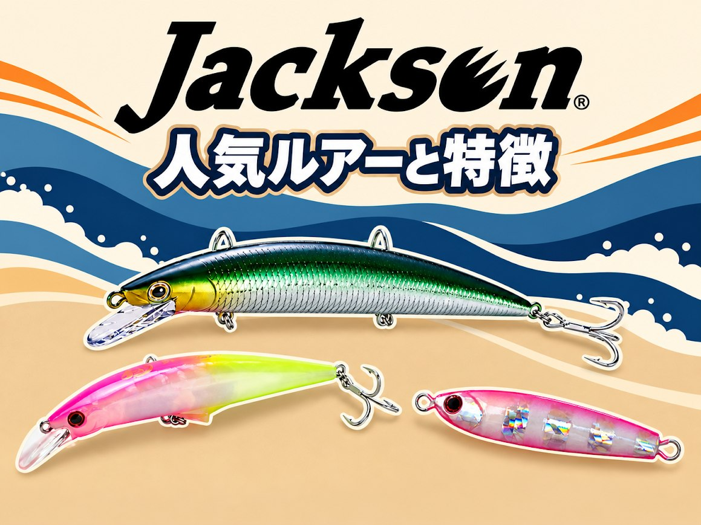
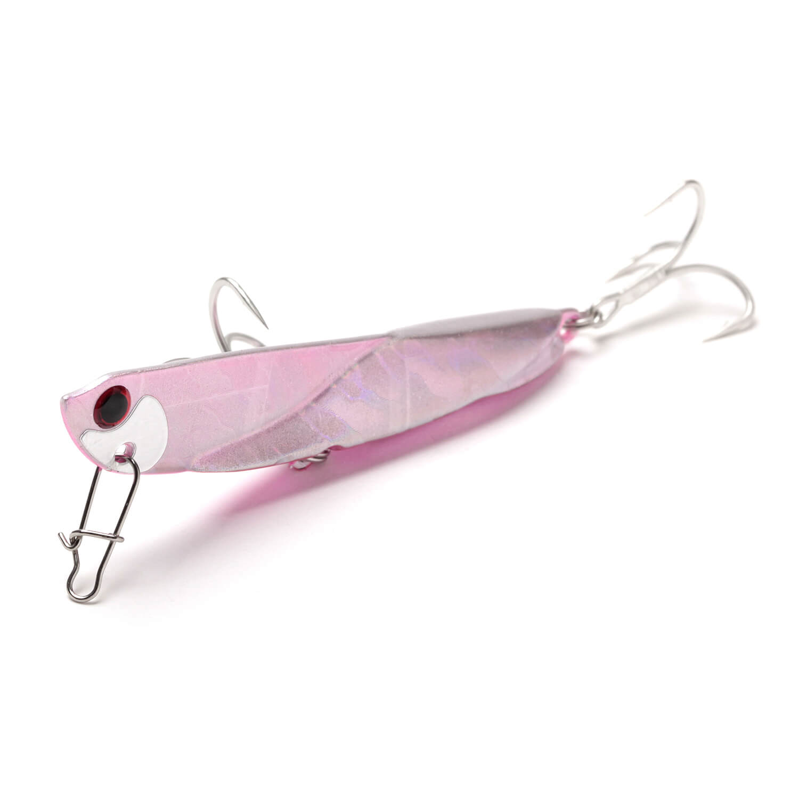
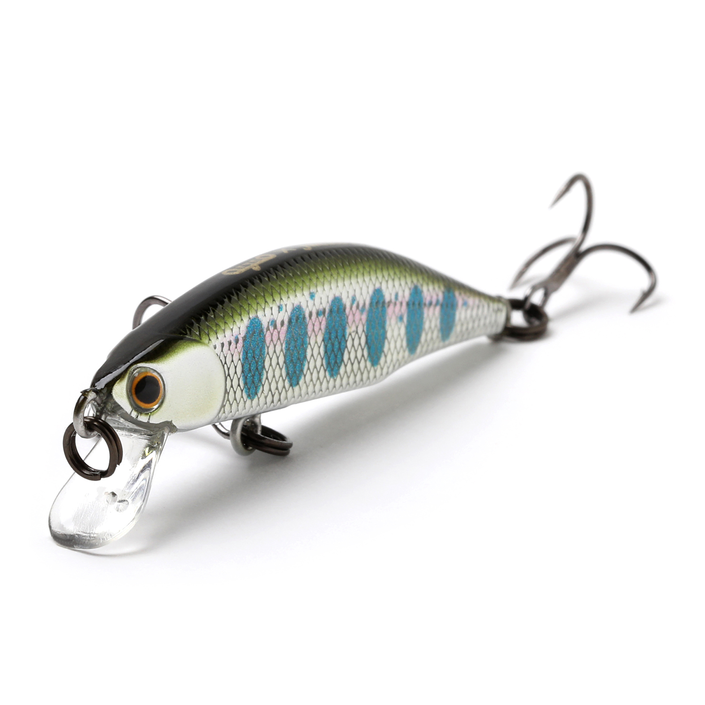

Jackson（ジャクソン）1975年創業、静岡発の“飛ぶ”ルアーメーカー
サーフの定番「飛び過ぎダニエル」や「アスリート」シリーズで知られる、ルアーフィッシング黎明期からの老舗です。

基本データ
| 社名 | 株式会社ジャクソン（Jackson inc.） |
|---|---|
| 本拠地 | 静岡県静岡市駿河区 |
| 代表者 | 加藤 慶太（代表取締役社長） |
| 設立 | 1975年 |
| 得意ジャンル | サーフ（ヒラメ・マゴチ）、シーバス、サワラ・青物、ライトゲーム、トラウト |
| 主なシリーズ | 飛び過ぎダニエル、アスリート、Gコントロール、鉄PAN、ピンテール、砂団子、メテオーラ、オーシャンゲート（ロッド） |
| 代表ルアー | 飛び過ぎダニエル、アスリート12SSP、鉄PANバイブ、ピンテール サゴシチューン、Gコントロール、砂団子、メテオーラ |
| コンセプト | CAST SOMETHING DIFFERENT |
| 公式 | jackson.jp |
※代表者・製品ラインナップは変わることがあります。最新情報は公式サイトでご確認ください。
ジャクソンの3つの特徴
1ルアーフィッシング黎明期からの老舗
1975年に静岡市で設立。海外ルアーの輸入販売から始まり、1980年にはルアー専用シーバスロッド「Cheiron」を発表するなど、日本のルアーフィッシングの広がりとともに歩んできたメーカーです。
2自社ルアー工場で作る“飛ぶ”ソルトルアー
1999年に静岡市にルアー工場を設立。名前のとおり飛距離を追求した「飛び過ぎダニエル」や、サーフの大型魚に向けた「アスリート」シリーズなど、遠投性能に定評のあるルアーが揃います。
3ソルトからトラウトまで、楽しむためのこだわり
サーフ・堤防のソルトルアーから渓流・エリアのトラウトルアー、ロッドや小物までラインナップは幅広め。「楽しくつながる」「かっこよく楽しむ」「想像的な楽しみ」という3つの「C」を掲げ、釣り場や地域への配慮も大切にしています。
ジャクソンの歩み
| 1975年 | 静岡県静岡市に設立。Bill Lewis、Cotton Cordell などのルアーの輸入販売を開始 |
|---|---|
| 1980年 | ルアー専用シーバスロッド「Cheiron」を発表 |
| 1983年 | 日本初のフリッピン専用バスロッド「Flippin Basser」を発表 |
| 1984年 | Cheiron Basser シリーズが、作家・開高健氏に支持される |
| 1999年 | 静岡県静岡市にルアー工場を設立 |
| 2022年 | 本社を同市内の新社屋へ移転 |
| 2024年 | 米国に関係会社 Jackson USA, Inc. を設立 |
※公式サイトの沿革から抜粋しています。
ジャクソンの人気ルアー7選
サーフ・堤防のソルトルアーを中心に、定番の7シリーズを紹介します。

飛び過ぎダニエルメタルジグ
その名のとおり、自重から想像する以上に飛ぶメタルジグ。サーフ・港湾・河川・磯とフィールドを選ばず、ヒラメやシーバス、マゴチ、青物などを狙えます。
激しいワイドウォブリングで存在感を出し、腹部にもトレブルフックを付けてあらゆる方向からのバイトに対応。「距離は出したいけど浅い」「ベイトが小さい」場面でも使いやすいジグです。
👉 詳しくは 飛び過ぎダニエルの解説記事 へ

アスリート12SSPシンキングペンシル
遠浅サーフ攻略のために生まれた120mmのシンキングペンシル。後方重心で飛行姿勢がブレず、メタルジグに匹敵する飛距離を出せます。
着水後はお尻から垂直に落ちてすぐボトムを取り、スローに巻くとお尻を大きく振るロールで誘えます。シンペンというよりミノー感覚で使えるのが特徴です。
👉 詳しくは アスリート12SSPの解説記事 へ

鉄PANバイブメタルバイブレーション
飛距離、巻き始めからすぐ振動するレスポンス、魚を寄せる強い波動を高いレベルで両立したメタルバイブ。シーバス・チヌ・青物など幅広い魚に使え、重さのバリエーションも豊富です。
👉 詳しくは 鉄PANバイブの解説記事 へ

ピンテール サゴシチューンシンキングミノー
サゴシの習性を研究して生まれた、業界初のサゴシ専用ミノー。速巻きすると規則的なウォブリングの中に強いフラッシングの平打ちが自動で入り、リアクションバイトを誘います。
👉 詳しくは ピンテール サゴシチューンの解説記事 へ

Gコントロールヘビーシンキングミノー
重さで飛ばせるヘビーシンキングミノーの弱点だった「速く巻かないと泳がない」を、ベリーの独自のセカンドリップで解消したミノー。
28gでも半分の14gクラスのシンキングミノー並みの速度で泳ぎ、ウォブリングにローリングを加えたナチュラルな動きでヒラメ・サゴシ・青物を誘います。
👉 詳しくは Gコントロールの解説記事 へ


メテオーラトラウトミノー（シンキング）
渓流ミノーのスタンダードとして作られたフラットサイドミノー。限界まで下げた重心で激流でも水面から飛び出しにくく、ジャークやトゥイッチにもよく追従します。
タングステンウエイトで、フォール中も水平にヒラ打ちしながら誘えます。ライトロックゲームに使う人もいます。
👉 詳しくは メテオーラの解説記事 へ
※スペックは代表的なサイズです。リニューアル等で変わる場合があります。
画像出典:Jackson公式HP
最初の1つの選び方
- サーフのヒラメ・マゴチ → 飛び過ぎダニエル 30g＋アスリート12SSP
- ジグで反応がないヒラメ・マゴチ → Gコントロール 28 や 砂団子
- 堤防・河口のシーバス → 鉄PANバイブ 20g
- サゴシ・サワラ → ピンテール サゴシチューン 28g、Gコントロール 28
- 渓流のトラウト → メテオーラ 52
よくある質問
ジャクソンはどこの国のメーカー？
日本のメーカーです。本社は静岡県静岡市にあり、1999年には同市にルアー工場も設立しています。
ジャッカル（JACKALL）とは違うメーカー？
別のメーカーです。名前が似ていますが、ジャクソン（Jackson）は静岡県静岡市、ジャッカル（JACKALL）は滋賀県のメーカーです。
初心者でも使える？
使えます。飛び過ぎダニエルや鉄PANバイブは投げて巻くだけで使えるので、サーフや堤防でルアー釣りを始めたばかりの人にもおすすめです。